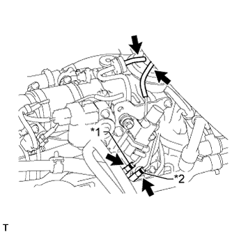

КЛАПАН УПРАВЛЕНИЯ РАЗРЕЖЕНИЕМ > УСТАНОВКА |
| 1. УСТАНОВИТЕ ЭЛЕКТРОННЫЙ КЛАПАН УПРАВЛЕНИЯ РАЗРЕЖЕНИЕМ В СБОРЕ (для РОГ) |
Закрепите электронный клапан управления разрежением вместе с кронштейном 2 болтами.
|  |
Подсоедините 4 вакуумных шланга.
| *1 | Желтая метка |
| *2 | Розовая метка |
Подсоедините разъем.
| 2. УСТАНОВИТЕ ГАЗОВЫЙ ФИЛЬТР С КРОНШТЕЙНОМ ГАЗОВОГО ФИЛЬТРА |
Установите газовый фильтр с кронштейном газового фильтра и закрепите болтом.
Подсоедините 2 вакуумных шланга.
| 3. УСТАНОВИТЕ КРОНШТЕЙН КЛАПАНА РОГ |
Установите кронштейн клапана РОГ, закрепив его 2 гайками.
| 4. ПОДСОЕДИНИТЕ ЖГУТ ЭЛЕКТРОПРОВОДКИ ДВИГАТЕЛЯ |
Введите в зацепление зажим и подсоедините жгут проводов двигателя.